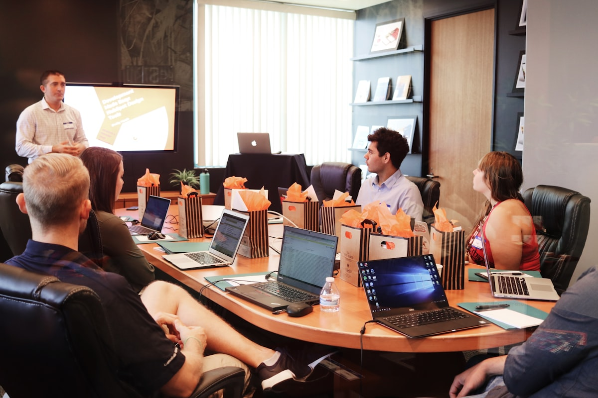

Si eres dueño de una consulta dental, estudio jurídico, un centro de estética, o tienes un emprendimiento, tu tiempo vale oro. Te ayudo a simplificar tu día a día, ordenar tu agenda y clientes, y aplicar Inteligencia Artificial práctica que realmente aporte valor.
Seguramente has escuchado hablar de ChatGPT, automatizaciones y asistentes virtuales. Puede sonar abrumador o lejano. Pero la realidad es simple:
Si tu agenda de pacientes o el papeleo de tus clientes está desorganizado, aplicar IA solo acelerará ese desorden. Juntos limpiamos tus flujos de trabajo cotidianos.
Diseñamos sistemas sencillos y accesibles para conectar tu web, calendarios y mensajes. Usamos herramientas que ya existen, sin obligarte a aprender código.
Tus clientes reciben respuestas al instante, tu asistente pasa menos tiempo en tareas repetitivas y tú te enfocas en entregar tu servicio de alto valor.

Ofrecemos sesiones de capacitación adaptadas al perfil de tu equipo, explicadas de forma muy directa y con casos prácticos.
No necesitas un departamento de sistemas. Nos enfocamos en automatizaciones rápidas de implementar que alivian la carga de tu día a día.
¿Pierdes clientes los fines de semana o fuera de horario de oficina por no contestar a tiempo?
Implementamos asistentes virtuales (en WhatsApp o Web) que responden preguntas frecuentes sobre tus tratamientos o servicios, confirman ubicaciones y coordinan citas directamente con tu calendario en tiempo real.
Elimina las tareas manuales repetitivas que te quitan horas a ti y a tu personal administrativo.
Conectamos tus herramientas cotidianas (WhatsApp, Excel, Formularios de Google, Gmail) para que la información viaje sola. Si un cliente agenda una consulta, el sistema puede pre-llenar su ficha, enviarle instrucciones de preparación y programar una encuesta post-servicio.
¿Pasas horas revisando contratos, fichas o informes buscando errores manualmente?
Generamos agentes de IA que funcionan como tu asistente para revisar documentos, generar resúmenes y encontrar errores o inconsistencias de forma rápida y confiable.
¿Sientes que tomas decisiones a ciegas porque tus resultados están dispersos en distintas planillas?
Desarrollamos un panel de control interactivo a tu medida que centraliza tus métricas clave, se puede compartir fácilmente con tu equipo y se entrega junto a un análisis de los hallazgos encontrados en tus datos.
¿Te gustaría saber con anticipación cuánta demanda tendrás o qué clientes están en riesgo de no volver?
Analizamos la calidad de tus datos actuales y desarrollamos modelos de predicción a la medida, implementados como una función integrada directamente a tu sistema o entregados mediante reportes periódicos fáciles de interpretar.
Muchos programadores e implementadores de IA saben mucho sobre líneas de código, pero no entienden la presión de atender pacientes, coordinar secretarias o llevar el control diario de una oficina.
Mi ventaja competitiva es la experiencia real. He trabajado por más de 25 años como Subgerente de Logística y Operaciones en entornos de alta complejidad (liderando áreas clave en Claro/VTR). He visto cómo se optimizan miles de procesos diarios y sé exactamente cómo coordinar la tecnología para que no interrumpa tu operación, sino que la potencie.
Mi enfoque con AIProcess es cercano y honesto. Te hablaré en tu idioma, evaluaré lo que realmente necesitas y te acompañaré en cada paso para que tu negocio crezca con seguridad y eficiencia en esta era tecnológica.
Escríbeme o llámame. Conversaremos de forma cercana sobre tu operación actual, sin presiones y en un vocabulario simple.
Soy Patricio Ferrer. Puedes comunicarte directamente conmigo a través de: